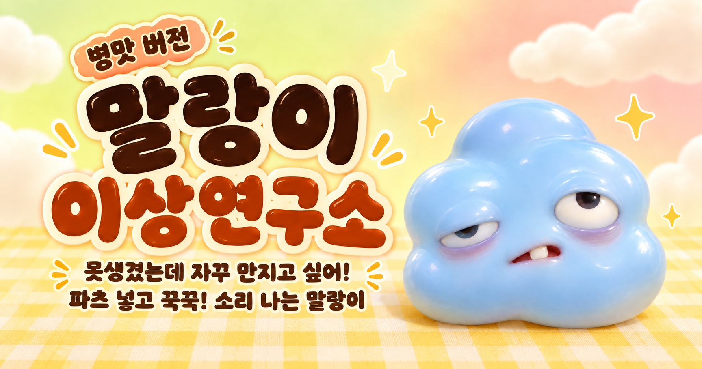

이상한 말랑이 연구소
내 취향으로 만들고, 손끝으로 조물조물.
말랑이0 번 조물조물
나를 만져봐!
이렇게 만져봐요톡 누르기
말랑이를 가볍게 톡! 누르면 파츠가 통통 튀어요.
첫 번째 · 친구 고르기
어떤 말랑이와 놀까요?
오늘 함께 놀 말랑이를 골라주세요.
두 번째 · 내 취향 담기
어떤 파츠를 넣을까요?
하나씩 눌러 넣어주세요. 최대 24개까지!
고른 파츠
넣은 파츠를 누르면 뺄 수 있어요.
세 번째 · 마음껏 조물조물
내 말랑이 완성!
꾹 누르고 당겨보세요.